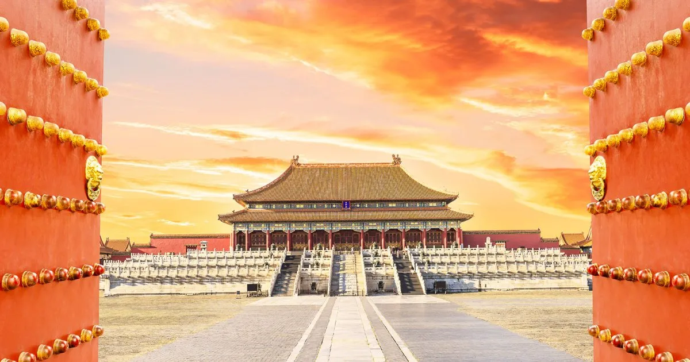
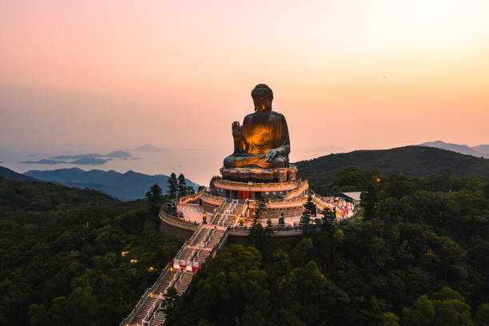
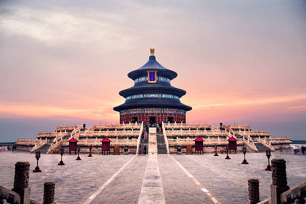
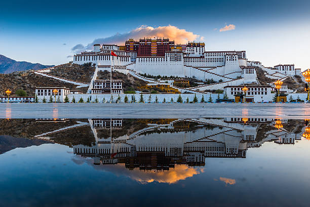
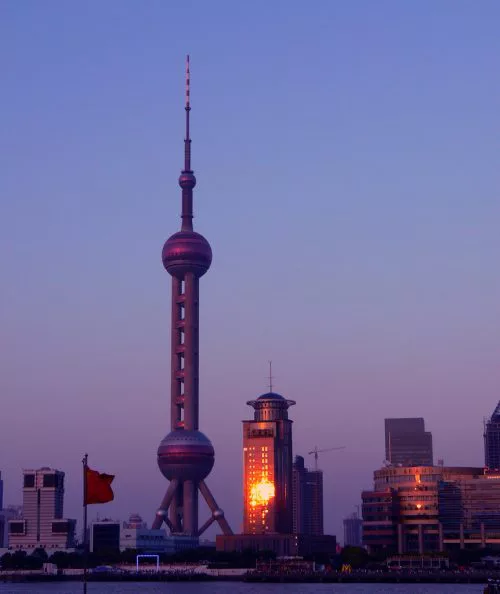
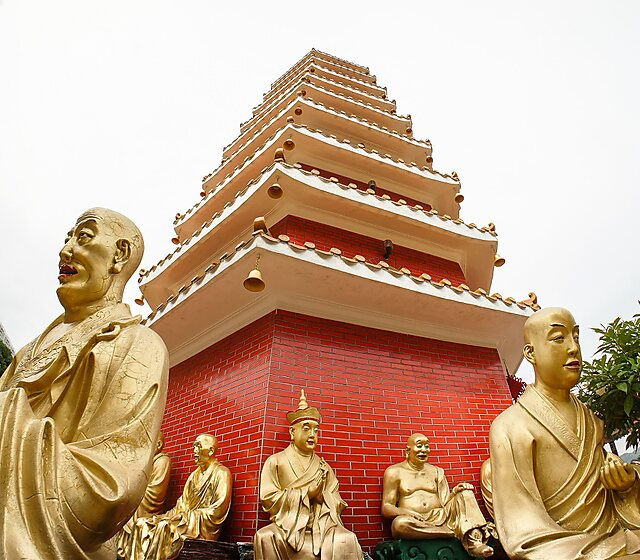
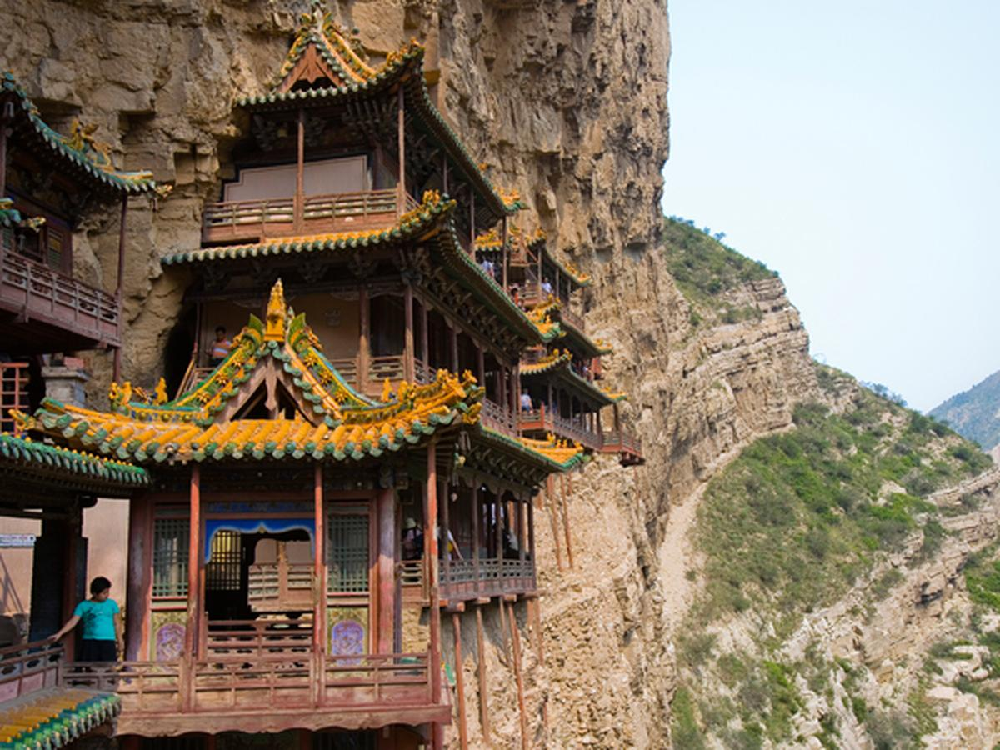
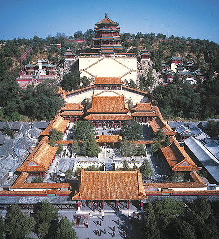
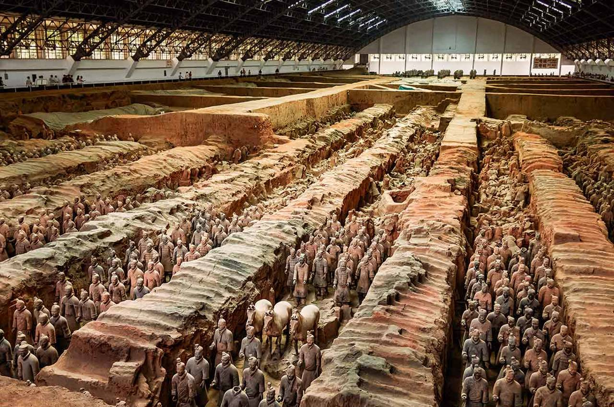

Monumentos chineses
 Muralha da China
Muralha da ChinaConstruída entre 214 e 204 aC,a Grande Muralha da China foi originalmente projetada para impedir a entrada de invasores estrangeiros em território chinês

Cidade proibída
A Cidade Proibida é o principal palácio cidade imperial de Pequim. Ele foi construído pelo 3 º imperador da dinastia Ming entre 1406 e 1420 e, desde então, é considerado uma bela representação da civilização chinesa.

Grande buda de Tian Tan
Localizado na ilha de Lantau, aos pés do monte Ngong Ping. O magnífico Grande Buda que possui nada menos que 34 metros de altura!
Construído entre 1990 e 1993, nele foram utilizados quase 250 toneladas de bronze!
Este colosso de metal vigia a República Popular da China a partir do topo do seu pedestal de lótus.
Ele é o representante de uma nova China, orgulhosa de sua tradição religiosa budista e pronta para receber visitantes ocidentais. Um verdadeiro marco no avanço da cultura local.
Além disso, O Buda Gigante está localizado perto do mosteiro de Po Lin, que atrai muitos peregrinos provenientes de toda a Ásia

Templo do céu
Tanto a Dinastia Ming quanto a Dinastia Qing o utilizavam para pedir a intercessão celestial a favor das colheitas na primavera, assim como para agradecer ao céu pelos frutos obtidos no outono). Sendo assim, ele era considerado como um elo entre o céu e a terra (Tian). Sacrifícios importantes também foram feitos aos deuses neste imponente santuário, emblema do desejo de mostrar uma China monumental em todo o seu esplendor.

Palácio de Potala
O Palácio de Potala é um palácio-fortaleza (Dzong) do século XVII localizado na cidade de Lhasa, no topo do Morro Marpori, também conhecido como "Colina Vermelha". Este monumento chinês é famoso por ter sido a casa dos Dalai Lamas no Tibete até 1959. Desde então, tornou-se um museu da República Popular da China.

Torre pérola do oriente
a Pérola do Oriente é uma enorme torre de televisão que reina no céu da cidade desde 1995. Os chineses apreciam acordar e poder ver de suas janelas essa torre de 468 metros de altura. Uma espécie de Torre Eiffel do mundo chinês, esta construção com a aparência de um "bilboquê" gigante faz referência à China antiga através de suas formas.

Monastério de 10.000 Budas
O Monastério dos 10.000 Budas é um templo budista localizado em Sha Tin, uma nova cidade no território de Hong Kong. Fundada em 1951 por um grande sábio chamado Yuet Kai e o local teve sua construção concluída em 1957.

Templo Xuankong
Também chamado de Xuankongsi, este mosteiro tem a particularidade de estar suspenso acima do solo, encostado a um precipício! Localizado em Datong, na província chinesa de Shanxi, este templo budista e taoísta construído no ano de 491 está localizado a 50 metros do solo, a fim de evitar ser inundado durante fortes chuvas.

Antigo Palácio de Verão
Erguido por iniciativa do imperador Qianlong (da dinastia chinesa Qin) em 1750, o monumento foi destruído duas vezes ao longo da sua existência. Para o deleite de todos, ele acabou sendo reconstruído após ambas as fatalidades.

Exército de Terracota de Xian
O Exército de Terracota de Xian é um conjunto fúnebre dedicado à glória das tropas de Qin Shi Huang, o primeiro imperador da China. O conjunto de estátuas fica localizado perto da cidade de Xian e foi construído entre os séculos 210 e 209 aC..

Talita de Assis Godoy 2024 - ©Todos os direitos reservados
Trabalho acadêmico sem fins lucrativos